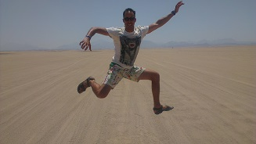

Szeretek utazni, világot látni, új dolgokat megtapasztalni. Javarészt nem félek dolgokat kipróbálni

Nagy álmom volt a vörös tengerben lubickolni és a sivatagban bohóckodni.
Egy ideig a bajor alpokban éltem, kirándulgattam

Amikor csak tehettem, átruccantam egy kicsit a Ricola hazájába túrázni, bicajozni, barátokat látogatni.
Dubrovnik óvárosa nagyon hangulatos és amikor a felvonóval másztuk meg a közeli hegyet, az cool volt.

A közeli lomnici tátrát is meglátogattam, jól meg is áztam lefelé, s természetesen mire leértem, kisütött a napocska.

Azért kicsi hazánkról se feledkezzünk meg. Speciál a Prédikálószéken szeles volt az idő.